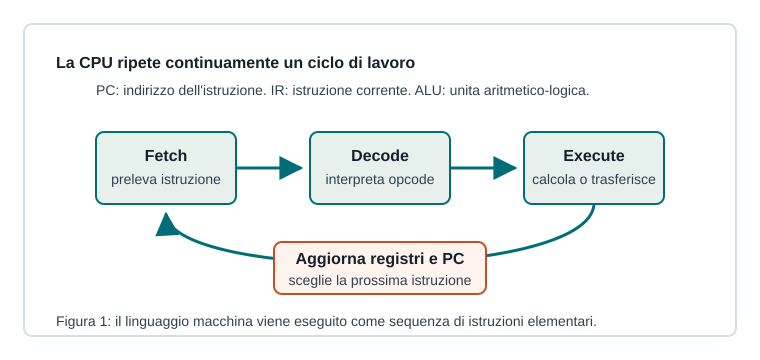

Capitoletto 1.3
Processore e linguaggio macchina
La CPU coordina l'esecuzione dei programmi leggendo istruzioni dalla memoria, interpretandole ed eseguendo operazioni elementari sui dati.

Componenti principali della CPU
La Control Unit coordina le operazioni, l'ALU esegue calcoli e confronti, i registri conservano temporaneamente dati e indirizzi. Il clock scandisce il ritmo con cui avvengono le operazioni interne.
La CPU non lavora direttamente su file e cartelle: esegue istruzioni elementari che trasferiscono dati, eseguono somme, confronti, salti e accessi alla memoria.
Il ciclo fetch-decode-execute
- Fetch: la CPU usa il Program Counter per prelevare dalla memoria l'istruzione da eseguire.
- Decode: la Control Unit interpreta l'opcode e prepara registri, ALU e bus.
- Execute: viene svolta l'operazione richiesta e il risultato viene salvato.
- Update: il Program Counter viene aggiornato, salvo salti o chiamate di funzione.
Linguaggio macchina e assembly
Il linguaggio macchina è formato da codici binari comprensibili alla CPU. L'assembly è una rappresentazione simbolica più leggibile, in cui istruzioni come MOV, ADD o JMP corrispondono a operazioni macchina.
MOV R1, 5
ADD R1, 3
STORE R1, totaleIl frammento carica un valore, esegue una somma e memorizza il risultato: poche istruzioni semplici compongono comportamenti complessi.
Prestazioni
Le prestazioni dipendono da frequenza di clock, numero di core, cache, architettura interna e tipo di istruzioni. Un clock più alto non garantisce da solo un computer più veloce: conta quante operazioni utili vengono concluse e quanto spesso la CPU resta in attesa della memoria.
Processore, memoria e bus vanno studiati insieme: una CPU potente può essere rallentata se i dati arrivano troppo lentamente.
Ripasso
Che cosa contiene il Program Counter?
L'indirizzo della prossima istruzione da prelevare dalla memoria.
Perché l'assembly è più leggibile del linguaggio macchina?
Perché usa nomi simbolici per istruzioni e registri invece di sequenze binarie grezze.